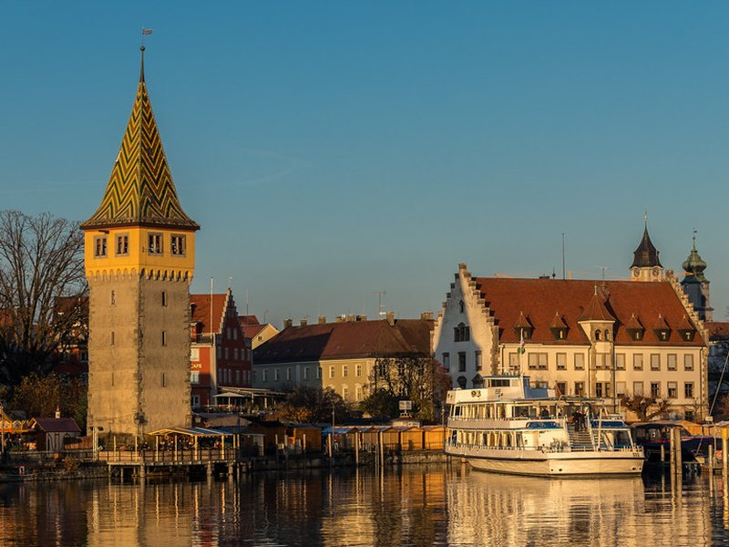
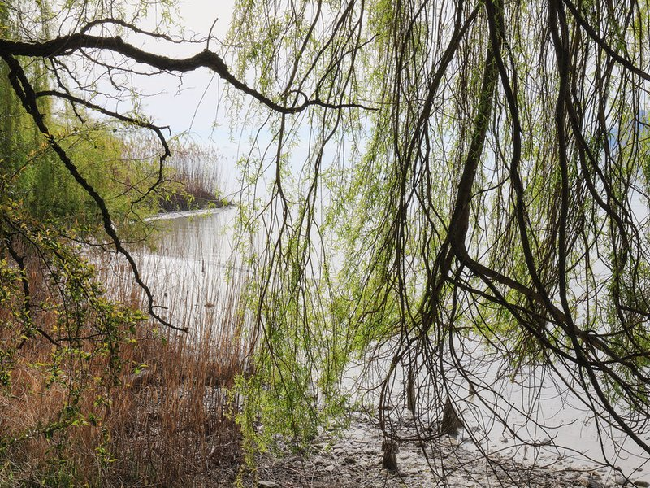
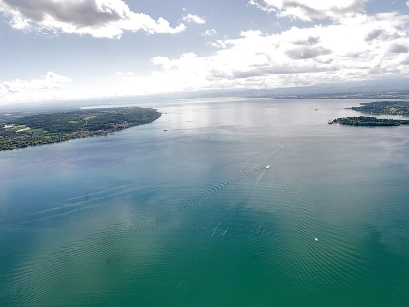
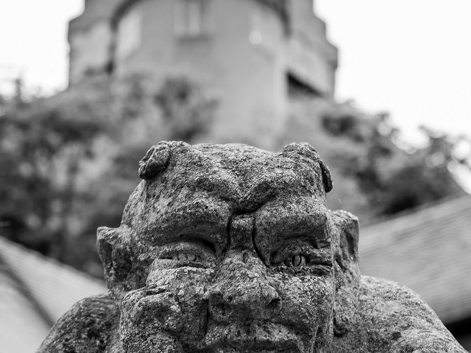
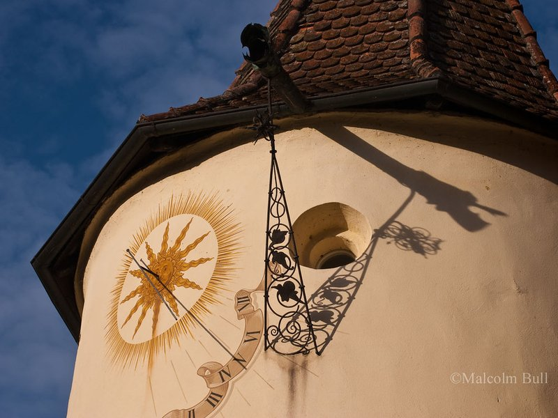
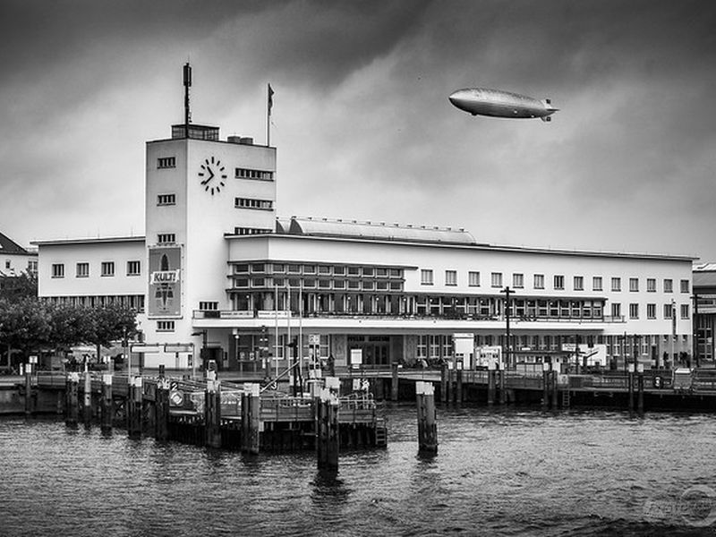

Explore Lake Constance
A Brief History
Lake Constance, or Bodensee, borders Germany, Austria, and Switzerland and was shaped by glacial action after the last ice age. Roman and medieval settlements traded along its shores. The Council of Constance from 1414 to 1418 addressed church reform in the lakeside city. Steam navigation began in the 19th century, linking vineyards, orchards, and textile towns. Reichenau Island's early medieval monastery is a UNESCO World Heritage site.
Attractions Map
Top Sights & Activities

Lindau Old Town
Located on an island in Lake Constance connected by bridges, Lindau’s Old Town boasts a rich tapestry of medieval architecture and history. As you stroll through its charming streets, you’ll discover iconic landmarks such as the Lindau Lighthouse and bustling squares filled with cafes and shops. The waterfront views add an extra layer of allure.

Mainau Island
Located on Lake Constance, Mainau Island is known as the Island of Flowers. Here, you’ll find gardens and picturesque landscapes that change with the seasons. The expansive array of floral displays, including rare and exotic plants, makes it a must-visit for nature lovers.

Lake Constance Boat Tour
Taking a boat tour across Lake Constance is an excellent way to the area’s charm. You’ll gain unique perspectives of the surrounding landscapes and catch glimpses of charming lakeside towns that dot the coastline. The tours offer relaxation as well as educational insights into the lake’s rich history and geography.

Meersburg Castle
Located in the charming town of Meersburg on the shores of Lake Constance, Meersburg Castle is a magnificent example of medieval architecture. As you approach the castle, the towering walls and ancient towers immediately capture your imagination, transporting you back in time. Inside, you’re greeted with well-preserved interiors that showcase a rich collection of medieval artifacts, including armor, weapons, and period furniture.

Reichenau Abbey
Reichenau Abbey is located on Reichenau Island, a UNESCO World Heritage site. This well-preserved monastery offers a fascinating look into early medieval monastic life and architecture. It’s a place of historical significance, dating back to the Carolingian Empire.

Zeppelin Museum
Situated in Friedrichshafen, the Zeppelin Museum is a treasure trove for history and aviation enthusiasts. It houses the world’s most significant collection of airship exhibits, bringing to life the grandeur and innovation of the iconic Zeppelin era. The museum features a full-size replica of a portion of the famous Hindenburg.